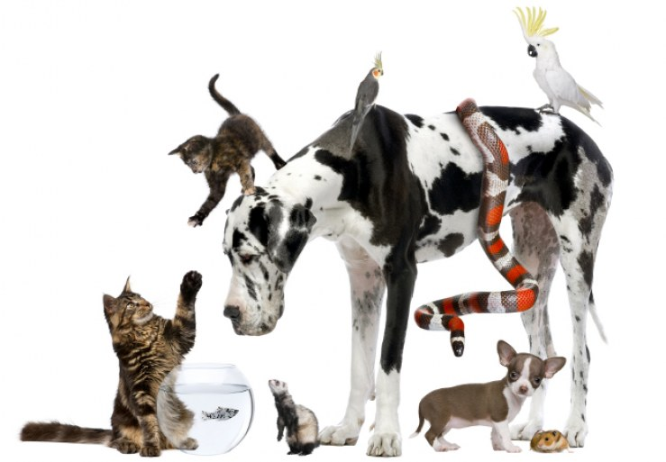

MASCOTAS
Una mascota es un animal doméstico que convive con seres humanos principalmente para brindar compañía, afecto y placer, sin ser utilizado habitualmente como alimento o animal de trabajo. Son valoradas por disminuir la soledad, reducir el estrés y fomentar la responsabilidad, siendo considerados miembros de la familia
Tipos de Mascotas
Los tipos de mascotas abarcan desde animales convencionales como perros y gatos hasta exóticos, pequeños mamíferos, aves, peces y reptiles. Las opciones más comunes para compañía incluyen perros, gatos, conejos, hámsters y aves como loros, mientras que otros eligen peces o incluso pequeños reptiles como tortugas.

Perros
Un perro es un animal doméstico mamífero que pertenece a la especie Canis lupus familiaris, es decir, una subespecie del lobo.
Se caracteriza por:
🐾 Ser leal y sociable, por eso es uno de los animales más cercanos al ser humano
🧠 Tener gran inteligencia, puede aprender órdenes y tareas
🏡 Vivir con humanos como mascota, compañero o incluso trabajador (perros policía, guía, rescate, etc.)
🦴 Tener una gran variedad de razas, tamaños y comportamientos
👉 En pocas palabras:
Un perro es un animal doméstico que acompaña al ser humano, brindando compañía, protección y afecto.
Gatos
Un gato es un animal doméstico mamífero que pertenece a la especie Felis catus.
Se caracteriza por:
🐱 Ser independiente, aunque también puede ser muy cariñoso
🧠 Tener gran agilidad y reflejos, es excelente cazador
🏡 Adaptarse fácilmente a la vida en casa
🧼 Ser muy limpio, ya que se acicala constantemente
👀 Tener sentidos muy desarrollados, especialmente la vista nocturna
👉 En pocas palabras:
Un gato es una mascota ágil e independiente que convive con el ser humano brindando compañía, pero a su propio estilo.